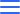

<div class="container-sidebar">
  <!-- Aqui ficam o itens do de logo e icones -->
  <div class="container-menu-items">
    <div class="menu-claims">
      <h1>Administrador</h1>
    </div>
    <div class="container-menu-icon">
      
    </div>
  </div>

  <!-- Aqui ficam o itens do perfil do usuário -->
  <div class="container-menu-profile">
    <div class="menu-photo-profile">
      
    </div>
    <div class="menu-profile-description">
      <div class="profileName">
        <h2>Paulo Galdino</h2>
      </div>
      <div class="profession">
        <h5>Developer Manager</h5>

      </div>
    </div>
  </div>

  <!-- Aqui ficam de gerenciamento para as paginas do Site -->
  <div class="container-menu-sections"></div>
</div>

